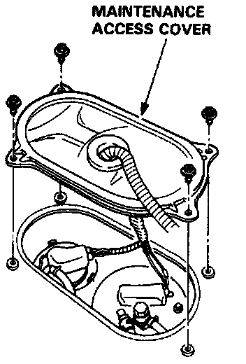
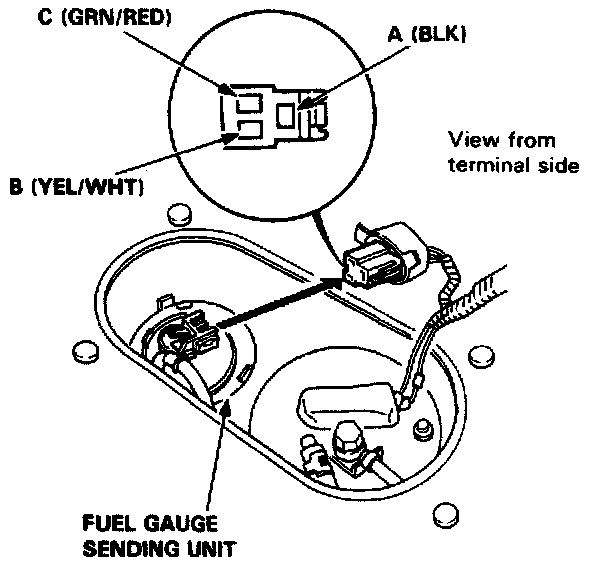

Fuel Gauge: Testing and Inspection

Gauge Test
1. Remove the maintenance access cover in the luggage area.
2. Disconnect the 3-P connector from the sending unit.

3. Connect the voltmeter positive probe to the B (YEL/WHT) terminal and the negative probe to the A (BLK) terminal, then turn the ignition switch ON.
Std and L: There should be battery voltage.
LS model: There should be approx. 8V.
^ If the voltage is specified, go to step 4.
^ If the voltage is not specified, check for:
- Blown No.5 (7.5 A) fuse in the dash fuse box.
- An open in the YEL, YEL/WHT or BLK wire.
- Poor ground (G14 or G19).
Check the fuel gauge and 8V regulator in the gauge assembly if the fuse and wiring are normal.
4. Turn the ignition switch OFF. Attach a jumper wire between the B (YEL/WHT) and A (BLK) terminals.
5. Turn the ignition switch ON. Check that the pointer of the fuel gauge starts moving toward "F"mark.
CAUTION: Turn the ignition switch OFF before the pointer reaches "F" mark on the gauge dial. Failure to turn the ignition switch OFF before the pointer reaches the "F" mark may cause damage to the fuel gauge.
NOTE: The fuel gauge is a bobbin (cross coil) type, hence the fuel level is continuously indicated even when the ignition switch is OFF, and the pointer moves more slowly than that of a bimetal type.
^ If the pointer of the fuel gauge does not swing at all, replace the gauge.
^ Inspect the fuel gauge sending unit if the gauge is OK.